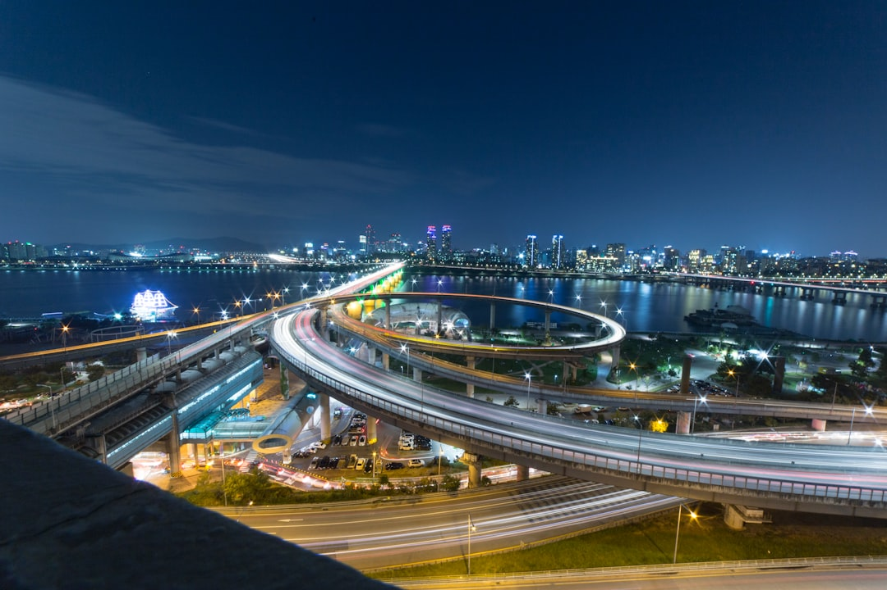

산업은행 AI·반도체 스타트업 펀드 15곳, 소재·장비 투자 빠진 구조적 공백

산업은행은 2025년 AI·반도체 분야 스타트업 15곳을 선정해 기업당 최대 50억 원 규모의 정책금융을 지원한다고 밝혔다. 동시에 국민성장펀드 운용사 18곳을 선정해 AI·반도체 투자를 본격화하겠다는 계획도 공개했다.
그러나 공개된 지원 대상 분야를 보면 AI 반도체 설계(팹리스), AI 소프트웨어·서비스, 온디바이스 AI 칩 등 설계·SW 중심의 포트폴리오가 주를 이룬다. 소재(희토류·화합물 반도체 원료)·공정 장비·계측 장비 분야 스타트업 지원은 15곳 중 2~3곳에 그치는 것으로 알려졌다.
한국의 반도체 소재 국산화율은 2024년 기준 약 50% 수준(금액 기준)이며, 공정 장비 국산화율은 약 20~25%에 불과하다. 특히 EUV 공정용 포토레지스트, CMP 슬러리, 특수 가스류는 일본·미국 의존도가 70% 이상이다.
한국경제인협회(한경협)도 별도의 AI·반도체 성장 로드맵을 발표하며 2030년까지 시스템반도체 세계 시장 점유율을 현재 3%에서 10%로 끌어올리겠다는 목표를 제시했다. 그러나 이 목표의 전제 조건인 소재·장비 공급망 내재화 투자 계획은 구체적 수치 없이 원론 수준에 머물고 있다.
정책금융의 투자 편향 문제는 이번이 처음이 아니다. 2022~2023년에도 반도체 특화 펀드 조성 당시 팹리스·설계 분야에 자금이 쏠리고 소재·장비 분야는 '기술 성숙도가 낮다'는 이유로 투자 심사에서 걸러지는 패턴이 반복됐다. 그 결과 2025년 현재도 한국의 EUV 포토레지스트 국산화율은 0%에 가깝다.
공급망 리스크는 칩 설계가 아니라 소재와 장비에서 터진다. 2019년 일본의 포토레지스트·불화수소 수출 규제, 2023년 중국의 갈륨·게르마늄 통제가 모두 소재·장비 단에서 발생한 충격이었다. AI 반도체 투자가 설계 중심으로 흘러가는 동안, 소재 병목은 해소되지 않고 다음 위기를 준비하고 있다.
팹리스 설계 스타트업과 AI SW 기업들은 이번 정책금융 혜택을 직접 받는 단기 수혜자다. 특히 온디바이스 AI 칩 설계사(예: 사피온·리벨리온 등 기존 수혜 패턴 유사 기업들)는 산업은행 자금과 민간 VC 후속 투자가 결합되는 구조의 수혜를 입는다.
운용사 18곳 중 반도체 전문 VC(예: 한국벤처투자, 스틱인베스트먼트 등 유사 구조 기관들)는 위탁 운용 수수료 외에 AI 반도체 포트폴리오의 밸류업 수혜를 기대할 수 있다.
소재·장비 스타트업들은 또다시 정책금융의 사각지대에 놓인다. 소재 기업은 양산 적용까지 5~10년의 검증 기간이 필요해 VC 투자 사이클과 맞지 않는 구조적 문제가 있다. 이 문제를 해결하려면 정책금융이 장기(10년 이상) 인내자본(Patient Capital) 방식으로 접근해야 하지만, 현재 산업은행 펀드의 만기 구조는 5~7년에 불과하다.
한국 반도체 산업 전체가 장기적으로 손해를 본다. 소재 국산화율 50%, 장비 25% 수준이 유지되는 한, 다음 번 일본·중국의 수출 통제 때도 한국은 똑같이 흔들릴 수밖에 없다. 정책금융이 단기 성과 측정 가능한 분야에만 몰리는 구조는 바뀌어야 한다.
산업 전략가·정책 입안자라면 이번 15개 스타트업 지원 포트폴리오 중 소재·장비 비중을 공시 자료로 검증하고, 다음 라운드에서는 소재·장비 전용 쿼터(최소 30% 이상)를 명시적으로 설정하는 방향으로 정책을 설계해야 한다.
기업 구매 담당자라면 소재·장비 국산화 스타트업과의 협력을 단순 구매 계약이 아닌 '공동 개발' 또는 '우선 구매 조건부 투자' 형태로 접근해야 한다. 이 구조가 정착되면 소재 기업은 초기 매출을 확보하고, 수요 기업은 공급망을 내재화할 수 있다.
실제 조달 현장에서는 — 소재 국산화 시도가 실패하는 가장 흔한 이유는 '품질 기준 미달'이 아니라 '시양산(시범 양산) 물량을 받아줄 고객이 없다'는 것이다. 스타트업이 수율 90%짜리 소재를 개발해도 대기업 구매팀이 '아직 검증 안 됐다'며 발주를 미루는 구조가 반복된다. 정책금융이 실효성을 가지려면 대기업 수요처의 시양산 구매 의무화를 연계해야 한다.
이 포스팅은 쿠팡 파트너스 활동의 일환으로 수수료를 제공받습니다.